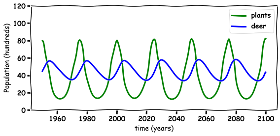
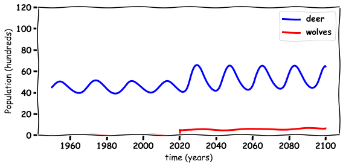

Using maths to model the impact of the re-introduction of wolves
 Image credit:
Image credit:
Using maths to model the impact of the re-introduction of wolves
Abstract
This repository contains a jupyter notebook which demonstrates how maths can be used to model an ecosystem. I use the predator prey equation to illustrate how the introduction of Wolves could result in an increase in the deer population.
Modelling the Re-introduction of Wolves
School of Mathematical Sciences
TU Dublin
Introduction
This webpage will describe a mathematical model that simulates impact of the introduction of wolves on deer and plants population using Python.
import numpy as np
import math
%matplotlib inline
import matplotlib.pyplot as plt # side-stepping mpl backend
import matplotlib.gridspec as gridspec # subplots
import warnings
font = {'family' : 'normal',
'weight' : 'bold',
'size' : 14}
plt.rc('font', **font)
from IPython.display import HTML
HTML('''<script>
code_show=true;
function code_toggle() {
if (code_show){
$('div.input').hide();
} else {
$('div.input').show();
}
code_show = !code_show
}
$( document ).ready(code_toggle);
</script>
<form action="javascript:code_toggle()"><input type="submit" value="Click here to toggle on/off the raw code."></form>''')
What is mathematics used for?
- Neuroscience
- Engineering
- Physics
- Biology
- Football
- Computer Games
- Animation
- Nature
Predator Prey
Predators and prey
The cyclical relationship of Predators and Prey in the wild means that when there is an abundance of prey, the predators will eat more and the prey population will increase. On the other hand, if there is a shortage in the number of prey, the number of predators will decrease due to the scarcity of food sources [1-4].
# INITIAL CONDITIONS
N=1000000
h=0.01
time = np.arange(1950, 2100, h ) # time
N=len(time)
plant=80*np.ones(N) # 60 billions small plant
deer=45*np.ones(N) # 30 billion deer
SMALLplant = np.array( [0.9,-0.02,0.03])
deer_constant= np.array([0.005,0.002,-0.001])
for i in range (1,N):
plant[i]=plant[i-1]+h*plant[i-1]*(SMALLplant[0]+SMALLplant[1]*deer[i-1])
deer[i]=deer[i-1]+h*deer[i-1]*(deer_constant[0]+deer_constant[1]*(plant[i-1]-40))
Deers

The plot below shows the deer (blue) population as a function of time over 150 years.
with plt.xkcd():
## PLOTTING
fig = plt.figure(figsize=(8,4))
plt.plot(time, deer, 'b-', label='deer',linewidth=3)
plt.grid()
plt.xlabel('time (years)')
plt.ylabel('Population (hundreds)')
plt.legend(loc='best')
plt.tight_layout()
plt.ylim([0,120])
# plt.savefig('deer_Hand.png', bbox_inches='tight',dpi=300)
plt.show()

The deer population goes up and down on a year by year basis.
What do deers eat?
Deers eat plants, and if the deer each too plants one year there are less the next.
with plt.xkcd():
## PLOTTING
fig = plt.figure(figsize=(8,4))
plt.plot(time, plant, 'g-', label='plants',linewidth=3)
plt.grid()
plt.xlabel('time (years)')
plt.ylabel('Population (hundreds)')
plt.legend(loc='best')
plt.tight_layout()
plt.ylim([0,120])
# plt.savefig('deer_.png', bbox_inches='tight',dpi=300)
plt.show()

The Maths model Deer and Plants
In a balanced eco system the relationship between plants (prey) and deer (predator) can be described mathematically using a Loketta-Volterra model [2-4]
\begin{equation} \frac{d P}{dt}=0.9P-0.02PD, \end{equation}
\begin{equation} \frac{d D}{dt}=0.001D+0.001 (P-40)D, \end{equation}
this set of equations models the interaction between plants (P) and deer (D).
The equations can be written in words as:
| The rate of change of population | is equal to | the current population with a control factor |
|---|---|---|
| The increase in plant population $\frac{d P}{dt}$ | is equal to | the current plant population $0.9P$ minus the amount of plants the deer eat $-0.02DP$ |
| The increase in deer population $\frac{d D}{dt}$ | is equal to | the current Deer population $0.005D$ plus the amount of fish salmon eat $+0.0001DP$ |
Or they can be summed up as the deer are the predators who eat the plants to survive.
Deer and Plants
How does maths predict the future?
These differential equations can be re-written as Adding and Subtraction using the Euler method [5-6]
\begin{equation} P{Future}=P{Current}+0.9P{Current}-0.002P{Current}\times D_{Current}, {equation}
\begin{equation} D{Future}=D{Current}+0.005D{Current}+0.0001(P{Current}-40) \times D_{Current} \end{equation}
this set of equations models the interaction between plants (P) and deer (D).
with plt.xkcd():
fig = plt.figure(figsize=(8,4))
plt.plot(time, plant, 'g-', label='plants',linewidth=3)
plt.plot(time, deer, 'b-', label='deer',linewidth=3)
plt.grid()
plt.xlabel('time (years)')
plt.ylabel('Population (hundreds)')
plt.legend(loc='best')
plt.tight_layout()
plt.ylim([0,120])
# plt.savefig('plant_deer.png', bbox_inches='tight',dpi=300)
plt.show()

What does a balanced ecosystem look like?
Below is a plot of balanced ecosystem, in the x-axis is the number of plants and the y is number of deer. The plot shows how the two interact and maintain an orbit around a equilibrium point (balance point).
with plt.xkcd():
fig = plt.figure(figsize=(6,6))
plt.plot(plant, deer, 'k-', linewidth=3)
plt.grid()
plt.xlabel('plants')
plt.ylabel('deer')
plt.tight_layout()
#plt.savefig('plant_vs_deer.png', bbox_inches='tight',dpi=300)
plt.show()

Wolves
Now the question is what would happen if we re-introduced wolves in for example 2020 [7] https://www.irishtimes.com/news/politics/greens-call-for-wolves-to-be-reintroduced-to-ireland-1.4036692
 Some of the concerns with this are:
Some of the concerns with this are:
Can the wolves maintain?
Will the wolves eat all the deer.
How will it impact other things in the eco system.
Results
The plot below shows the population change of the wolves (red) which does maintain and grow after the re-introduction of 500 wolves.
# INITIAL CONDITIONS
N=1000000
h=0.01
time = np.arange(1950, 2100, h ) # time
N=len(time)
plant=80*np.ones(N) # 60 billions small plant
deer=45*np.ones(N) # 30 billion deer
wolves=5*np.ones(N) # 30 billion deer
#wolves[time<2020]=0
SMALLplant = np.array( [0.9,-0.02,0.03])
deer_constant= np.array([0.005,0.002,-0.001])
wolves_constant= np.array([-0.05,0.001,0.0])
for i in range (1,N):
if time[i-1]<2020:
wolves[i-1]=0
else:
wolves[i]=wolves[i-1]+h*wolves[i-1]*(wolves_constant[0]+wolves_constant[1]*(deer[i-1]))
plant[i]=plant[i-1]+h*plant[i-1]*(SMALLplant[0]+SMALLplant[1]*deer[i-1]+SMALLplant[2]*wolves[i-1])
deer[i]=deer[i-1]+h*deer[i-1]*(deer_constant[0]+deer_constant[1]*(plant[i-1]-60)+deer_constant[2]*wolves[i-1])
with plt.xkcd():
fig = plt.figure(figsize=(8,4))
plt.plot(time, wolves, 'r-', label='wolves',linewidth=3)
plt.grid()
plt.xlabel('time (years)')
plt.ylabel('Population (hundreds)')
plt.legend(loc='best')
plt.tight_layout()
# plt.savefig('Wolves_Hand.png', bbox_inches='tight',dpi=300)
plt.show()

How does the introduction of Wolves impact Deer?
The plot below shows that surprisingly the introduction of wolves (red) results in an increase in population in deer (blue).
with plt.xkcd():
## PLOTTING
fig = plt.figure(figsize=(8,4))
plt.plot(time, deer, 'b-', label='deer',linewidth=3)
plt.plot(time, wolves, 'r-', label='wolves',linewidth=3)
plt.grid()
plt.xlabel('time (years)')
plt.ylabel('Population (hundreds)')
plt.legend(loc='best')
plt.tight_layout()
plt.ylim([0,120])
# plt.savefig('Deer_Wolves_Hand.png', bbox_inches='tight',dpi=300)
plt.show()

Why do Wolves benefit?
It turns out that the re-introduction of wolves (red) results in an increase in plants (green) and hence an increase in deer (blue).
with plt.xkcd():
fig = plt.figure(figsize=(8,4))
plt.plot(time, plant, 'g-', label='plants',linewidth=3)
plt.plot(time, deer, 'b-', label='deer',linewidth=3)
plt.plot(time, wolves, 'r-', label='wolves',linewidth=3)
plt.grid()
plt.ylim([0,120])
plt.xlabel('time (years)')
plt.ylabel('Population (hundreds)')
plt.legend(loc='best')
plt.tight_layout()
# plt.savefig('Plants_Deer_Wolves_hand.png', bbox_inches='tight',dpi=300)
plt.show()
What does the new ecosystem look like?
The Maths model Deer, Plants and Wolves
Here I add the volved to the model
\begin{equation} \frac{d P}{dt}=0.9P-0.02PD+0.003PW, \end{equation}
\begin{equation} \frac{d D}{dt}=0.001D+0.001(P-40)D-0.001DW, \end{equation}
\begin{equation} \frac{d W}{dt}=-0.05W+0.001 DW, \end{equation} this set of equations models the interaction between plants (P) and deer (D).
How does maths predict the future?
These differential equations can be re-written as Adding and Subtraction
\begin{equation} P{Future}=P{Current}+0.9P{Current}-0.002P{Current}\times D{Current}+0.003P{Current}W_{Current}, \end{equation}
\begin{equation} D{Future}=D{Current}+0.005D{Current}+0.0001(P{Current}-40) \times D{Current}-0.001D{Current}W_{Current} \end{equation}
\begin{equation} W{Future}=W{Current}-0.05W{Current}+0.0001P{Current} \times W_{Current} \end{equation}
this set of equations models the interaction between plants (P), deer (D) and wolves.
How does it impact the eco system
The introduction of wolves resulted in a new balanced ecosystem with more plants and wolves.
with plt.xkcd():
fig = plt.figure(figsize=(6,6))
plt.plot(plant, deer, 'k-', linewidth=3)
plt.grid()
plt.xlabel('plants')
plt.ylabel('deer')
plt.tight_layout()
# plt.savefig('plant_vs_deer_and_Wolves.png', bbox_inches='tight',dpi=300)
plt.show()

Yellowstone Park
The models in this notebook are just toy problems maybe up to illustrate a point but they were inspired by the re-introduction of wolves into Yellowstone Park shown in the video below [8].
from IPython.display import HTML
# Youtube
HTML('<iframe width="560" height="315" src="https://www.youtube.com/embed/ysa5OBhXz-Q" frameborder="0" allow="accelerometer; autoplay; encrypted-media; gyroscope; picture-in-picture" allowfullscreen></iframe>')
/Users/johnbutler/anaconda3/lib/python3.7/site-packages/IPython/core/display.py:694: UserWarning: Consider using IPython.display.IFrame instead
warnings.warn("Consider using IPython.display.IFrame instead")
Open Questions and Future Discussions
The model shows the benefit of wolves to a simple ecosystem model of plants and deer. Mathematical models of this type can be used to motivate the discussion.
The immediate questions that can arise from this simulation are:
How many wolves are beneficial?
Does Ireland have the same ecosystem as yellowstone?
What are hidden negatives?
What are hidden positives?
You can also look at the notebook on the negative impact of microplastics to our ecosystem [4].
How does this describe our neck muscles
Similar models can be used to describe how muslces interact but instead of predators and prey the have contracting and expanding muscles.
h=0.01
time = np.arange(0, 10, h ) # time
N=len(time)
Left=np.sin(time)
Right=np.cos(time)
with plt.xkcd():
fig = plt.figure(figsize=(8,4))
plt.plot(time, Left, 'g-', label='Left Side',linewidth=3)
plt.plot(time, Right, 'b-', label='Right Side',linewidth=3)
plt.grid()
plt.xlabel('time (s)')
plt.ylabel('Neck Muscle Activity')
plt.yticks([-1,1],['expand','contract'])
plt.legend(loc='best')
plt.tight_layout()
plt.show()

References
[1] Vito Volterra. Fluctuations in the abundance of a species considered mathematically. Nature,118:558–560,1926.
[2] Wikipedia contributors. (2018, July 27). Lotka–Volterra equations. In Wikipedia, The Free Encyclopedia. Retrieved 09:33, September 7, 2018, from https://en.wikipedia.org/w/index.php?title=Lotka%E2%80%93Volterra_equations&oldid=852191432
[3] Alfred J Lotka. Analytical note on certain rhythmic relations inorganic systems.Proceedings of the National Academy of Sciences,6(7):410–415,1920.
[4] Aleksandra Samotyja, Gordon Chambers, John S Butler, Microplastic as Prey https://github.com/john-s-butler-dit/MicroPlastics
[5] Euler Method (2019, October 20) https://en.wikipedia.org/wiki/Euler_method
[6] John S Butler, Numerical Analysis for differential Equation, Chapter 1 Euler Method, (2019, October 20) https://github.com/john-s-butler-dit/Numerical-Analysis-Python/tree/master/Chapter%2001%20-%20Euler%20Methods
[7] Greens call for wolves to be reintroduced to Ireland (2019, October 20) https://www.irishtimes.com/news/politics/greens-call-for-wolves-to-be-reintroduced-to-ireland-1.4036692
[8] How Wolves Change a River (2019, October 20) https://www.youtube.com/embed/ysa5OBhXz-Q
John S Butler
Lecturer in Mathematical Sciences
My research interests are the application of computatinal, statistical and numerical methods for basic and translational research in Neuroscience, Neurology and Optometry.